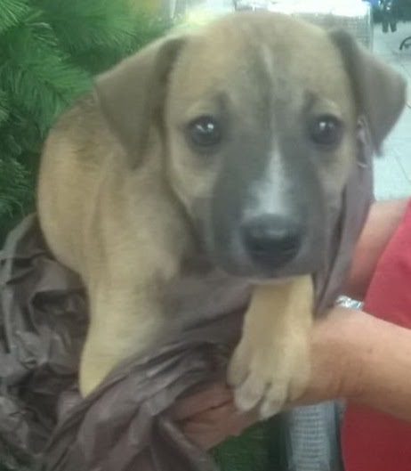
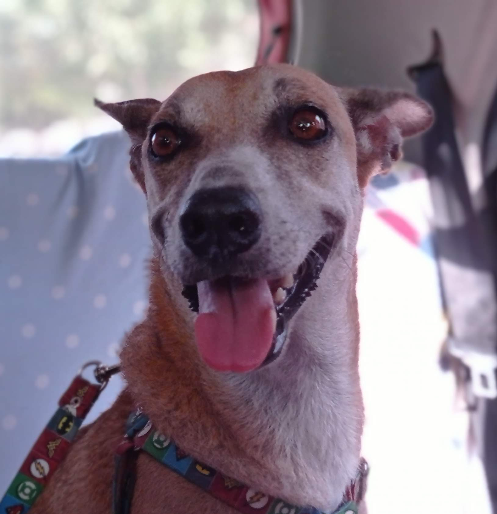
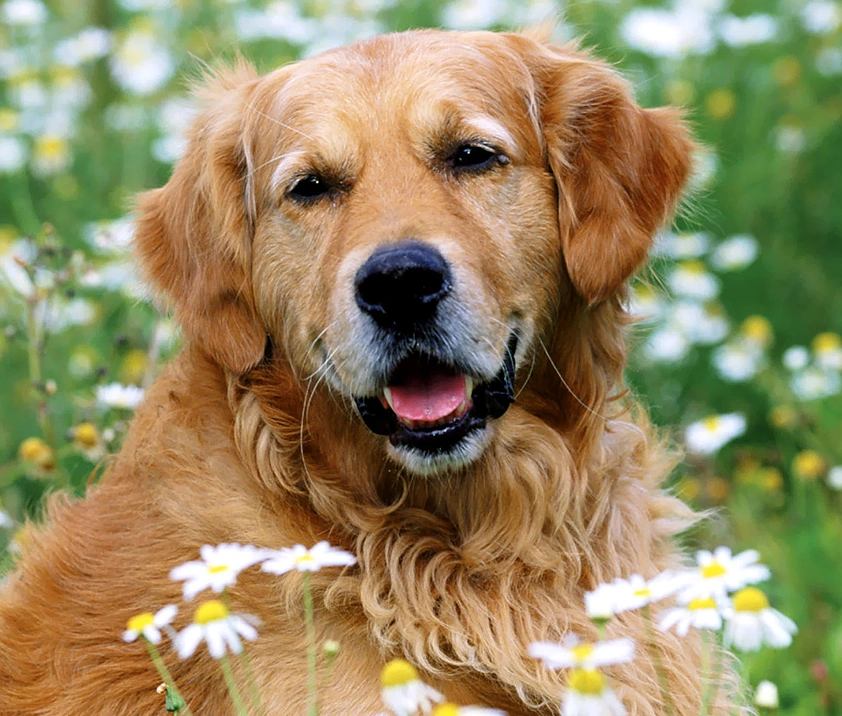
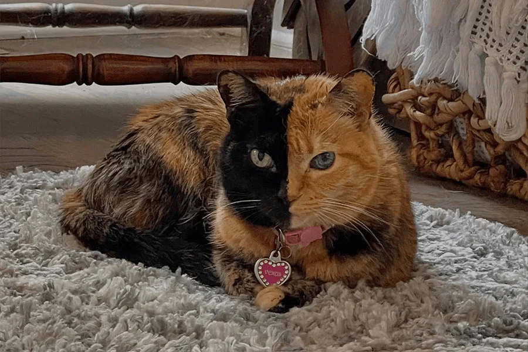
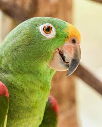

Lia bebe
Una cachorra de 2 meses aproximadamente.

Una cachorra de 2 meses aproximadamente.

Lia diciembre 2020.

Una perra muy energica, cariñosa, guardina del hogar, le gustaba tomar el sol en las tardes.

Un perro guardián que adora correr por el parque.

Gata curiosa, experta en trepar por los muebles.

Un loro hablador que imita el sonido de las motos.